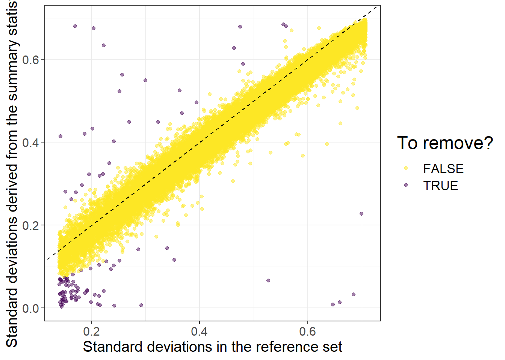
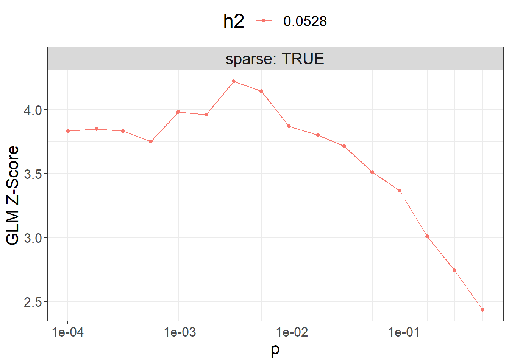

Chapter 6 Polygenic scores (PGS)
Polygenic scores are one of the main focus of package {bigsnpr}. These are the main methods currently available:
penalized regressions, with individual-level data (Privé, Aschard, and Blum 2019) [tutorial]
Clumping and Thresholding (C+T) and Stacked C+T (SCT), with summary statistics and individual level data (Privé et al. 2019) [tutorial]
LDpred2, with summary statistics (Privé, Arbel, and Vilhjálmsson 2020) [tutorial]
lassosum2, with the same input data as LDpred2
6.1 Exercises: LDpred2 and lassosum2
You should also check the other tutorials mentioned before.
6.1.1 Preparing the data
Let us first read the data produced in 3.3:
library(bigsnpr)
obj.bigsnp <- snp_attach("tmp-data/GWAS_data_sorted_QC.rds")
G <- obj.bigsnp$genotypes
NCORES <- nb_cores()
map <- dplyr::transmute(obj.bigsnp$map,
chr = chromosome, pos = physical.pos,
a0 = allele2, a1 = allele1)We then download some GWAS summary statistics from a large consortium (Nikpay et al. 2015; Buniello et al. 2019) and prepare them in the format required by LDpred2:
txt <- runonce::download_file(
"ftp://ftp.ebi.ac.uk/pub/databases/gwas/summary_statistics/NikpayM_26343387_GCST003116/cad.add.160614.website.txt",
dir = "tmp-data", fname = "sumstats_CAD.txt")
writeLines(readLines(txt, n = 3))#> markername chr bp_hg19 effect_allele noneffect_allele effect_allele_freq median_info model beta se_dgc p_dgc het_pvalue n_studies
#> rs143225517 1 751756 C T .158264 .92 FIXED .013006 .017324 .4528019 .303481 35
#> rs3094315 1 752566 A G .763018 1 FIXED -.005243 .0157652 .7394597 .146867 36# One could also read other variables such as 'median_info', 'model',
# 'het_pvalue', and 'n_studies' to apply some quality control to the sumstats.
sumstats <- bigreadr::fread2(
txt,
select = c("chr", "bp_hg19", "noneffect_allele",
"effect_allele", "beta", "se_dgc"),
col.names = c("chr", "pos", "a0", "a1", "beta", "beta_se"))
# GWAS effective sample size from the paper;
# it would be better to have a per-variant sample size in the sumstats.
# For quantitative traits, just use the total sample size for `n_eff`.
sumstats$n_eff <- 4 / (1 / 60801 + 1 / 123504) Let us now match these with the internal data we have:
(info_snp <- tibble::as_tibble(snp_match(sumstats, map)))#> 9,455,778 variants to be matched.#> 62,531 ambiguous SNPs have been removed.#> 340,563 variants have been matched; 170,352 were flipped and 309,568 were reversed.#> # A tibble: 340,563 x 9
#> chr pos a0 a1 beta beta_se n_eff `_NUM_ID_.ss`
#> <int> <int> <chr> <chr> <dbl> <dbl> <dbl> <int>
#> 1 1 7.53e5 T C 5.24e-3 0.0158 1.63e5 2
#> 2 1 7.86e5 G A -9.81e-4 0.0163 1.63e5 54
#> 3 1 7.99e5 G A 1.56e-2 0.0143 1.63e5 80
#> 4 1 9.50e5 G A -4.01e-2 0.0134 1.63e5 126
#> 5 1 1.02e6 G A -1.50e-2 0.0101 1.63e5 246
#> 6 1 1.04e6 T C -8.94e-3 0.0130 1.63e5 309
#> 7 1 1.13e6 C A 7.63e-3 0.0147 1.63e5 584
#> 8 1 1.13e6 A C 1.43e-3 0.0164 1.63e5 594
#> 9 1 1.16e6 C T -2.21e-2 0.0208 1.63e5 719
#> 10 1 1.17e6 C T 2.78e-2 0.0207 1.63e5 776
#> # ... with 340,553 more rows, and 1 more variable: `_NUM_ID_` <int>Note that we recommend to use imputed HapMap3 variants when available, otherwise you can just use the genotyped variants as I am doing here. Try to use an LD reference with at least 2000 individuals (I have only 1401 in this example). You can download some precomputed LD reference for European individuals based on the UK Biobank (+ some example R script and some information on the HapMap3 variants) at https://figshare.com/articles/dataset/European_LD_reference/13034123.
Then we can perform some quality control on the summary statistics to see how standard deviations inferred from the external GWAS summary statistics are consistent with the ones in the internal data we have:
maf <- snp_MAF(G, ind.col = info_snp$`_NUM_ID_`, ncores = NCORES)
sd_val <- sqrt(2 * maf * (1 - maf))
sd_ss <- with(info_snp, 2 / sqrt(n_eff * beta_se^2 + beta^2))
is_bad <-
sd_ss < (0.5 * sd_val) | sd_ss > (sd_val + 0.1) | sd_ss < 0.1 | sd_val < 0.05When using quantitative traits (linear regression instead of logistic regression for the GWAS), you need to replace 2 by sd(y) when computing sd_ss. Have a look at section 3.4 of the LDpred2 paper.
library(ggplot2)
ggplot(dplyr::slice_sample(data.frame(sd_val, sd_ss, is_bad), n = 50e3)) +
geom_point(aes(sd_val, sd_ss, color = is_bad), alpha = 0.5) +
theme_bigstatsr(0.9) +
scale_color_viridis_d(direction = -1) +
geom_abline(linetype = 2) +
labs(x = "Standard deviations in the validation set",
y = "Standard deviations derived from the summary statistics",
color = "To remove?", title = "This is far from perfect; Neff is probably overestimated.")
df_beta <- info_snp[!is_bad, ]Then, we compute the correlation for each chromosome (note that we are using only 4 chromosomes for faster running of this tutorial):
for (chr in 1:4) { # REPLACE BY 1:22
print(chr)
corr0 <- runonce::save_run({
## indices in 'sumstats'
ind.chr <- which(df_beta$chr == chr)
## indices in 'G'
ind.chr2 <- df_beta$`_NUM_ID_`[ind.chr]
POS2 <- snp_asGeneticPos(map$chr[ind.chr2], map$pos[ind.chr2], dir = "tmp-data")
snp_cor(G, ind.col = ind.chr2, size = 3 / 1000, infos.pos = POS2,
ncores = NCORES)
}, file = paste0("tmp-data/corr_chr", chr, ".rds"))
}#> [1] 1
#> user system elapsed
#> 37.30 0.28 13.31
#> [1] 2
#> user system elapsed
#> 50.00 0.36 16.28
#> [1] 3
#> user system elapsed
#> 44.04 0.39 14.92
#> [1] 4
#> user system elapsed
#> 36.55 0.39 12.17Then we create the on-disk sparse genome-wide correlation matrix (again using only the first 4 chromosomes, for speed in this tutorial; replace by 1:22):
for (chr in 1:4) { # REPLACE BY 1:22
print(chr)
corr0 <- readRDS(paste0("tmp-data/corr_chr", chr, ".rds"))
if (chr == 1) {
ld <- Matrix::colSums(corr0^2)
corr <- as_SFBM(corr0, "tmp-data/corr", compact = TRUE)
} else {
ld <- c(ld, Matrix::colSums(corr0^2))
corr$add_columns(corr0, nrow(corr))
}
}#> [1] 1
#> [1] 2
#> [1] 3
#> [1] 4Note that the “compact” format for SFBMs is quite new. You will need packageVersion("bigsparser") >= package_version("0.5").
Make sure to reinstall {bigsnpr} when updating {bigsparser} to this new version (to avoid crashes).
file.size(corr$sbk) / 1024^3 # file size in GB#> [1] 0.5774516Note that you will need at least the same memory as this file size (to keep it cached for faster processing) + some other memory for all the results returned. If you do not have enough memory, processing will be very slow (because you would read the data from disk all the time). If using HapMap3 variants, requesting 60 GB should be enough. For this small example, 8 GB of RAM should be enough.
6.1.2 LDpred2
We can now run LD score regression:
df_beta <- dplyr::filter(df_beta, chr %in% 1:4) # TO REMOVE (for speed here)
(ldsc <- with(df_beta, snp_ldsc(ld, length(ld), chi2 = (beta / beta_se)^2,
sample_size = n_eff, blocks = NULL)))#> int h2
#> 0.87242475 0.02097793ldsc_h2_est <- ldsc[["h2"]]We can now run LDpred2-inf very easily:
# LDpred2-inf
beta_inf <- snp_ldpred2_inf(corr, df_beta, ldsc_h2_est)
pred_inf <- big_prodVec(G, beta_inf, ind.col = df_beta$`_NUM_ID_`)
AUCBoot(pred_inf, obj.bigsnp$fam$CAD)#> Mean 2.5% 97.5% Sd
#> 0.64440055 0.61318690 0.67438099 0.01558153For LDpred2(-grid), this is the grid we recommend to use:
# LDpred2-grid
(h2_seq <- round(ldsc_h2_est * c(0.1, 0.7, 1, 1.4), 4))#> [1] 0.0021 0.0147 0.0210 0.0294(p_seq <- signif(seq_log(1e-5, 1, length.out = 21), 2))#> [1] 1.0e-05 1.8e-05 3.2e-05 5.6e-05 1.0e-04 1.8e-04 3.2e-04 5.6e-04
#> [9] 1.0e-03 1.8e-03 3.2e-03 5.6e-03 1.0e-02 1.8e-02 3.2e-02 5.6e-02
#> [17] 1.0e-01 1.8e-01 3.2e-01 5.6e-01 1.0e+00params <- expand.grid(p = p_seq, h2 = h2_seq, sparse = c(FALSE, TRUE))
dim(params)#> [1] 168 3Here, we will be using this smaller grid instead (for speed in this tutorial):
(params <- expand.grid(p = signif(seq_log(0.001, 0.3, length.out = 8), 2),
h2 = round(ldsc_h2_est, 4), sparse = TRUE))#> p h2 sparse
#> 1 0.0010 0.021 TRUE
#> 2 0.0023 0.021 TRUE
#> 3 0.0051 0.021 TRUE
#> 4 0.0120 0.021 TRUE
#> 5 0.0260 0.021 TRUE
#> 6 0.0590 0.021 TRUE
#> 7 0.1300 0.021 TRUE
#> 8 0.3000 0.021 TRUEbeta_grid <- snp_ldpred2_grid(corr, df_beta, params, ncores = NCORES)
params$sparsity <- colMeans(beta_grid == 0)Then, we can compute the corresponding PGS for all these models:
pred_grid <- big_prodMat(G, beta_grid, ind.col = df_beta[["_NUM_ID_"]],
ncores = NCORES)
params$score <- apply(pred_grid, 2, function(x) {
if (all(is.na(x))) return(NA)
summary(glm(CAD ~ x + sex + age, data = obj.bigsnp$fam, family = "binomial"))$coef["x", 3]
})Note that missing values represent models that diverged substantially.
ggplot(params, aes(x = p, y = score, color = as.factor(h2))) +
theme_bigstatsr() +
geom_point() +
geom_line() +
scale_x_log10(breaks = 10^(-5:0), minor_breaks = params$p) +
facet_wrap(~ sparse, labeller = label_both) +
labs(y = "GLM Z-Score", color = "h2") +
theme(legend.position = "top", panel.spacing = unit(1, "lines"))
Then you can use the best-performing model here.
Note that you should use only individuals from the validation set to compute the $score and then evaluate the best model for the individuals in the test set.
library(dplyr)#> Warning: package 'dplyr' was built under R version 3.6.3best_beta_grid <- params %>%
mutate(id = row_number()) %>%
arrange(desc(score)) %>%
slice(1) %>%
pull(id) %>%
beta_grid[, .]To run LDpred2-auto, you can use:
# LDpred2-auto
# Note: use vec_p_init = seq_log(1e-4, 0.5, 30) in real scenario
# and defaults for 'burn_in' and 'num_iter' (again, for speed here)
multi_auto <- snp_ldpred2_auto(
corr, df_beta, h2_init = ldsc_h2_est,
vec_p_init = seq_log(1e-3, 0.1, NCORES), # TO CHANGE
burn_in = 50, num_iter = 50, # TO REMOVE
ncores = NCORES)We should perform some quality control on the chains (you should have more than 4, e.g. 30):
beta_auto <- sapply(multi_auto, function(auto) auto$beta_est)
pred_auto <- big_prodMat(G, beta_auto, ind.col = df_beta[["_NUM_ID_"]],
ncores = NCORES)
sc <- apply(pred_auto, 2, sd)
keep <- abs(sc - median(sc)) < 3 * mad(sc)
final_beta_auto <- rowMeans(beta_auto[, keep])We can finally test the final prediction
# could directly use `rowMeans(pred_auto[, keep])` here
final_pred_auto <- big_prodVec(G, final_beta_auto,
ind.col = df_beta[["_NUM_ID_"]],
ncores = NCORES)
AUCBoot(final_pred_auto, obj.bigsnp$fam$CAD)#> Mean 2.5% 97.5% Sd
#> 0.60696186 0.57584434 0.63815946 0.015939516.1.3 lassosum2: grid of models
lassosum2 is a re-implementation of the lassosum model that now uses the exact same input parameters as LDpred2 (corr and df_beta). It should be fast to run. It can be run next to LDpred2 and the best model can be chosen using the validation set.
Note that parameter ‘s’ from lassosum has been replaced by a new parameter ‘delta’ in lassosum2, in order to better reflect that the lassosum model also uses L2-regularization (therefore, elastic-net regularization).
beta_lassosum2 <- snp_lassosum2(
corr, df_beta, ncores = NCORES,
nlambda = 10, maxiter = 50) # TO REMOVEparams2 <- attr(beta_lassosum2, "grid_param")
pred_grid2 <- big_prodMat(G, beta_lassosum2, ind.col = df_beta[["_NUM_ID_"]],
ncores = NCORES)
params2$score <- apply(pred_grid2, 2, function(x) {
if (all(is.na(x))) return(NA)
summary(glm(CAD ~ x + sex + age, data = obj.bigsnp$fam, family = "binomial"))$coef["x", 3]
})library(ggplot2)
ggplot(params2, aes(x = lambda, y = score, color = as.factor(delta))) +
theme_bigstatsr() +
geom_point() +
geom_line() +
scale_x_log10(breaks = 10^(-5:0)) +
labs(y = "GLM Z-Score", color = "delta")
library(dplyr)
best_grid_lassosum2 <- params2 %>%
mutate(id = row_number()) %>%
arrange(desc(score)) %>%
slice(1) %>%
pull(id) %>%
beta_lassosum2[, .]best_grid_overall <- `if`(max(params2$score) > max(params$score),
best_grid_lassosum2,
best_beta_grid)